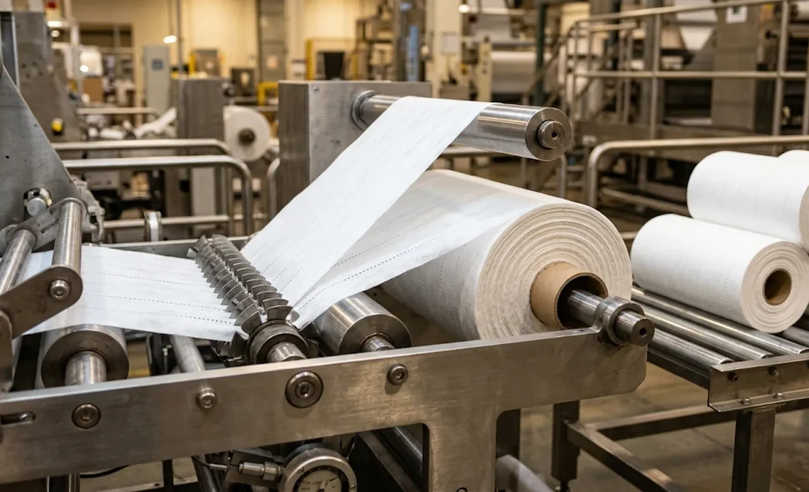

Published November 10, 2026 | By HDPTH Technical Editorial Team
Buyers often evaluate a wipes converting line the way they evaluate a slitter rewinder: by width, speed and unwind diameter. A wipes line is a sequence of converting operations performed in one pass, and each operation can limit the whole: an embossing unit slower than the slitting section starves it, and a folding module that jams on low-basis-weight spunlace wastes everything upstream of it. Define the finished product precisely, then force every module in the quotation to be dimensioned for that product at the same rate — the line delivers wipes, and no single machine inside it does.
What a wipes converting line does
The line converts a wide nonwoven incoming roll into finished wipes in one continuous flow. Depending on the product, the sequence includes unwinding the substrate under controlled tension; embossing for texture and bulk; longitudinal slitting into lanes matching the wipe width; perforating for the tear-off length; and finally folding with stacking for flat-sheet products, or rewinding onto cores — or without cores — for roll products. Hygiene, household, personal care, industrial and medical wipes all run on the same architecture. The buyer’s first decision is the product boundary: a line covering both folded and roll wipes carries more modules, more changeover hardware and a longer specification than either product alone.
The machine sequence and where output is set
Every wipes line has a pacing stage, and it is rarely the one with the highest brochure speed. Unwind tension must hold the spunlace or spunbond-meltblown substrate within its elastic window, because tension errors upstream reappear downstream as fold miscounts and perforation drift. The accumulator between the perforating and folding sections absorbs the speed difference created when folding runs intermittently. Finished roll quality at the rewind — hardness uniformity, count accuracy, straight edges — determines whether downstream packaging runs automatically. Walk the flow and ask one question per module: at what speed does this stage limit the line for my material? The answer is the real capacity you are buying.
Slitting and perforating: the specification core
Two processes in the middle of the line decide product quality more than any other. Longitudinal slitting must produce clean, low-lint edges across every lane, across the full basis weight range; dull or wrongly loaded blades raise fibre dust that contaminates the embossing pattern and the finished pack. Perforating is subtler: the perforation must be deep enough that each wipe tears off reliably, cycle after cycle, yet shallow enough that the web never breaks at production speed. Because depth, blade profile and web tension at the nip interact, the perforating unit needs calibrated, repeatable settings that live in the machine recipe rather than in an operator’s experience. Both processes deserve their own acceptance clauses — edge quality and dust measurement for slitting, tear-off reliability over a stated count for perforating — tested on the buyer’s own nonwoven at production speed. Machines that reach these settings through recipe recall change over in minutes.
Embossing, folding and rewinding modules
Embossing does more than decorate: pattern depth changes bulk, absorbency feel and how the web behaves in folding, so the unit should offer pattern rolls matched to the buyer’s substrate range. Folding is where flat-sheet lines succeed or fail; the fold plates, counters and stacking accuracy must handle the full basis weight range, and the specification should state a miscount and jam rate, not merely a speed. Roll products rely on the rewinding module instead, where uniform roll hardness and accurate count decide whether the customer’s dispenser feeds correctly. Buyers comparing rewinding hardware should review the HDPTH nonwoven rewinding machines range, which covers both core-wound and coreless configurations.
Capacity, changeover and the real production number
The capacity chapter of the specification should be written in finished product, not metres per minute. State wipes per minute and packs per shift for each SKU, then trace how changeover eats into that number: knife repositioning, perforation pattern changes, fold plate adjustment and recipe recall each add minutes that repeat with every order. Ask the supplier to state changeover time between two defined products, measured, not estimated, and to demonstrate it at the factory acceptance test — over a year of multi-SKU production, changeover time separates the winning line from the cheaper one more decisively than the headline speed.

Specifying and testing the line at acceptance
Acceptance testing must run the complete sequence on the buyer’s own substrate, at production speed, producing finished product — not a partial demonstration with supplier material. The measurable items belong in the protocol before the order: count accuracy over a defined sample; tear-off reliability over a stated number of perforations; fold quality and miscount rate for flat products; roll hardness and edge quality for roll products; and timed changeover between two sizes. Recorded results belong in the FAT report as the contractual baseline. Lines accepted this way start earning in their first week; lines accepted on a brochure demonstration start paying for the gap between promise and product.
Two related guides extend this picture: the Nonwoven Folding Machine: Buyer’s Guide examines the folding module, and the Nonwoven Converting Line Layout and Material Flow: Buyer’s Guide covers how the line sits in the factory for efficient material flow.
Planning a Wipes Converting Line?
Send HDPTH your product range, substrate and output targets. Our application engineers will propose the slitting, perforating and folding configuration we would build into the line — and define the acceptance tests that verify finished-product performance before the order is placed.
Submit Your Project InquiryFrequently asked questions
What does a nonwoven wipes converting line include?
A complete line typically comprises an unwind stand, tension control, embossing or printing units, longitudinal slitters, a perforating unit, an accumulator, a folding module and a rewind or stacking section. Flat-sheet wipes need folding and stacking; roll wipes need perforating and rewinding onto cores or as coreless rolls.
How are wipes perforated so they tear off one at a time?
Perforation depth, blade geometry and web tension at the perforating nip decide how cleanly the web tears. The perforation must be deep enough to initiate the tear reliably but not so deep that the web breaks at line speed. The setting belongs in the machine recipe, and tear-off performance should be demonstrated at the FAT on the buyer’s own nonwoven.
What line speed should I specify for a wipes converting line?
Specify production speed as finished product output, not as web speed. A line running at 400 metres per minute may deliver far fewer finished packs if folding or packaging stages limit the flow. State the target in wipes per minute and packs per shift for each product type, and require the supplier to demonstrate those figures during acceptance.
How much changeover flexibility do I need between wipe sizes?
That depends on the product mix. A line dedicated to one large-volume SKU needs little flexibility, while a converter running many sizes needs quick knife repositioning, adjustable fold plates and recipe recall. Count how many size changes per shift the sales plan implies, then budget changeover time accordingly — it is often the largest hidden capacity cost.
How is a wipes converting line tested before delivery?
The FAT should run the buyer’s own nonwoven at production speed and produce finished product through the complete sequence, with measured figures for count accuracy, tear-off performance, fold quality and finished roll hardness. Changeover between at least two sizes should be timed and recorded, and the results belong in the FAT report as the contractual baseline.